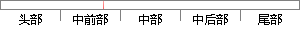

以一定的形式向用户呈现数据并允许用户对数据进行操作；
片段位置图

相似结果|
相似片段 1：，它把相应的参数封装起来发送给服务器端。在收到服务器端返回的数据后，将ison字符串解析，返回相应的对象给客户端。2)视图(View)。以一定的形式向用户呈现数据并允许用户对数据进行操作。3)控制器(Controller)。
相似片段 2：的作用，凡是与“用户”有关的操作，都应该看作是界面的一部分。可以说，“用户”角色的出现，指示了界面存在的必要性。又例如，界面是向用户展示数据内容和允许用户对数据实施各种操作的场所；为了满足用户的各种需要，同一种数据会有不同的展示形式。
相似片段 3：处理，使之合理的呈现给用户；另一方面同样的业务数据也需要根据需求以不同的方式呈现，如业务数据可以呈现出表格的形式，也可以呈现出图片的形式，这些都需要视图层进行处理；l 向用户提供业务操作的界面：用户使用
相似片段 4：，方便用户加深对数据的了解；模型可视部分中针对关联算法输出的结果以图表的形式表达，允许用户对模型进行操作，供用户对挖掘的结果进行评估。武汉理T人学硕十学位论文5．2未完成的工作及展望由于本人的能力有限
相似片段 5：对单条记录的操作，而 OLAP的重点则在于多维度间的关系。分析员用户会将整个企业视为一个多维视图；比如，利润可以看作是地区、产品、时间、和情景等的组合。多维数据模型允许用户对数据进行更直观的操作，包括
相似片段 6：的收益【6】。可配置性在SaaS应用中的实现是通过向用户提供一系列配置选项和功能一开关’’来实现的，以元数据的形式进行存储。因此，尽管基于相同的代码，SaaS用户仍可以通过配置来创建独特的操作体验。’以下
相似片段 7：和不足。通过列表和柱状图的形式呈现。2.跨年同比分析。跨年同比分析允许用户就某一或多个数据指标进行跨年的对比，直观展现出院校几年来的变化。通过列表加柱状图的形式呈现。六、总结该系统采用的.NET
|
※ 片段修改建议 ※
近似词参考：- 一定：必然 肯定 必定
- 形式：情势
- 呈现：显现 出现
- 允许：许可 答应 容许
- 进行：举行
- 操作：操纵
系统自动生成语句：以必然的情势向用户显现数据并许可用户对数据举行操纵；
注：本片段修改建议为系统自动生成，仅供参考。